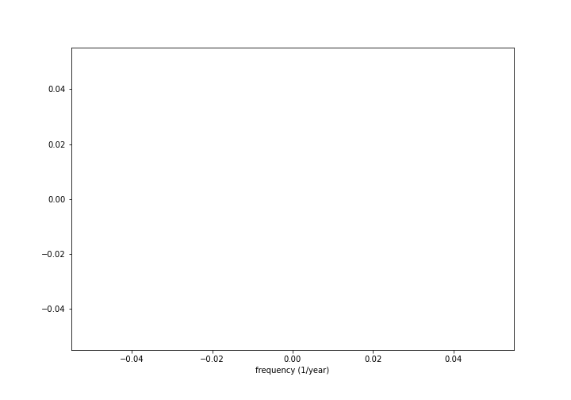

Missing orthodox population in the poll tax register of Vyborg 1880-1917
Antti Härkönen
2021-03-24
Introduction
Background
- Vyborg was part of the autonomous Grand duchy of Finland from 1812 to 1917
- The city had a large Orthodox minority, of which 90% were Russians
- Vyborg was a mid-level hub of commerce and migration in the central place system
- Vyborg connected Eastern Finland to St. Petersburg
Research problem
- Original idea to determine change of segregation
- Problems with data quality
- Determining how much population actually changes necessary
Sources
Parish records
- Most not available
- Vyborg health council reports total population by denomination in yearly reports
- Only available 1905-
Sources for migration
- Lutheran parish in St. Petersburg
- Poll tax register and parish registers both unreliable due to migration
Poll tax registers
- For taxation, also record for voting rights and property ownership
- Senate degree in 1878: from 1880 onward poll tax registers should have columns for non-lutherans
- Religion recorded until 1920s
Problems with sources
- Poll tax register numbers for orthodox population are inconsistent
- Total numbers of orthodox fluctuate too wildly to be real
- Some households with Russian names are marked Orthodox in some years and not in other years
Method
Time series analysis
- statistical methods for working with time series data
- common problems:
- spectral analysis (finding repeating patterns)
- shift point analysis (finding a point when a chance happens)
- autoregression models (how much previous observations affect next observation)
- moving average methods
- combinations of the above, e.g. ARMA
Fourier transform
Time series (1)

Time series (2)